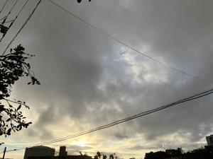
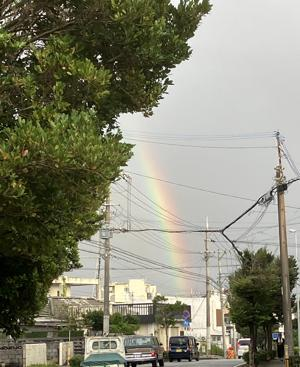
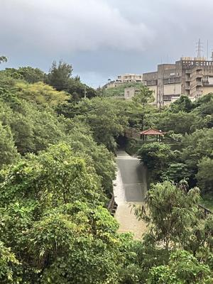
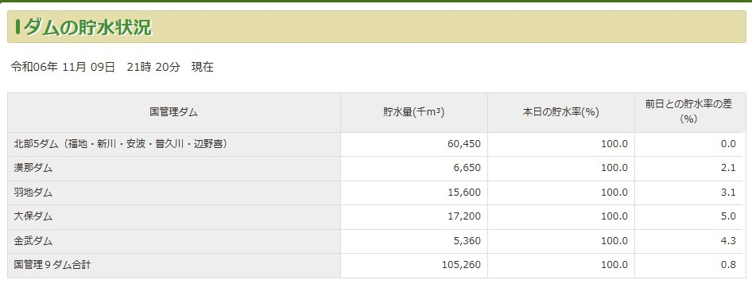

うるがいの話 ある日
最新: 大宜味村断水【うるがいの話 ある日】とは 一日だけのプログです
『うるがいの話』の最新一日だけのプログで、通信料が少なく経済的だ。カニの画像をクリックすると全ての日付が載る『うるがいの話』サイトを表示します
|
|
【うるがいの話】 うるがい(ｳﾙｶﾞｲ urugai)とは、『もずくがに』の名前でとても大きくなります。 |
|---|---|
|
|
【カミマヤーの話】 猫のことを方言でマヤーといいます。カミマヤー（kamimayaa）とは、神の猫のことです。 |
|
【たながぁの音楽】 たながぁ（ﾀﾅｶﾞｰ tanagaa）とは手長えびのことで、何種類かあり大きいのは車 エビぐらいになります。 |

|
【ぶながぁの話】 ぶながぁ(ﾌﾞﾅｶﾞｰ bunagaa)とは、赤い髪の毛、赤い身体、そして身長は１ｍ２０ｃｍ ぐらい、川の蟹を食べているの目撃された。場所は沖縄県国頭郡大宜味村のと ある村僕の隣近所に住んでいる爺さんから、聞いた話です。 |
|
|
【ギーマの話】 ギーマ(giima)とは、山原の里山に咲くスズランに似た、 花を付けます。実は食べられます、 気が付くと口の周りが紫になっています。 |
2024年11月10日 (日）大宜味村断水
16:39

大宜味村では浄水場のろ過池が浸水し、断水しているとテレビで放映し
ていた。甥っ子に確認しようと思うたが、やめる。私が、住んでいたこ
ろは、村の山のふもとに浄水場のろ過池はあったのだが、おそらく今は
使っていないのだろう。日常的な雨による異常気象、きのうから気温も
上がった、秋はどこへ行ったのだろう。
久々のウォーキング、虹がクッキリ

金城ダムも滝が流れていた

果たしてダムの貯水率を確認すると、１００％になっていた

今朝も、大雨が降っている。ツールドも二日続けて中止になる。

本日のバタフライピーの花、１５収穫。
１６時３２分 ビットコインの総資産 ￥３４、８９８（↑１、０３５）
売りたい